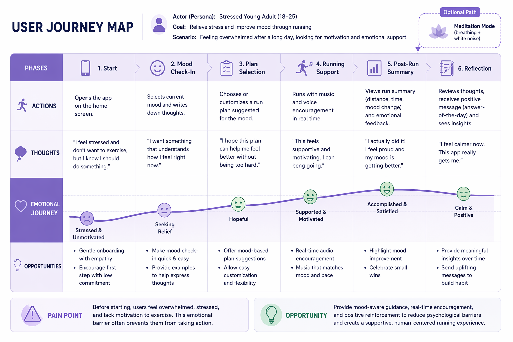
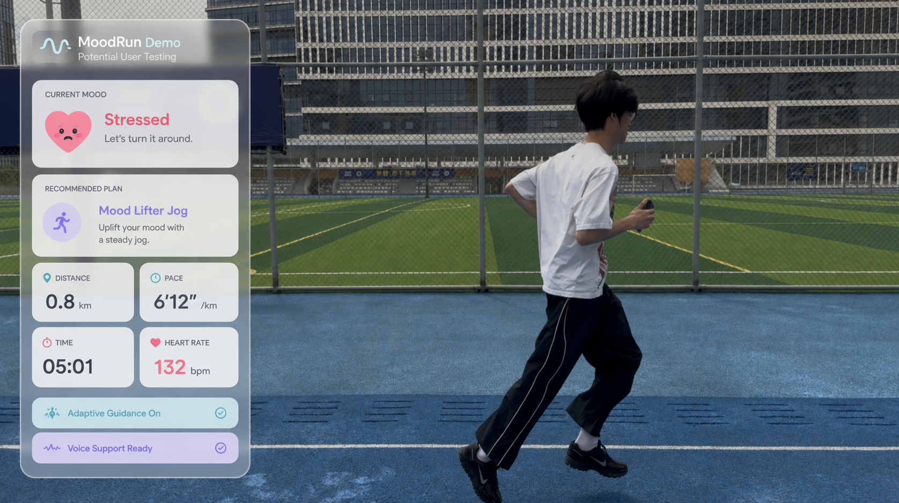
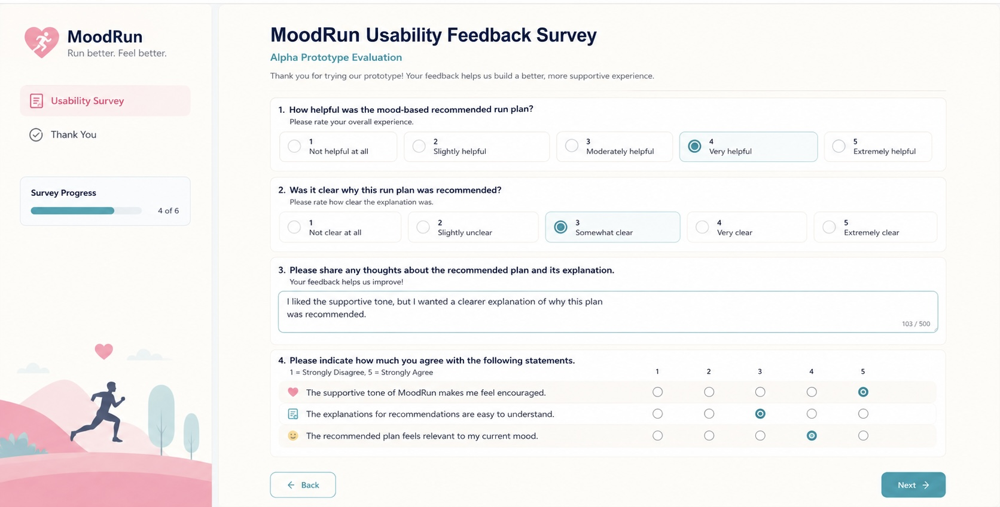

User Journey Map (Current Experience)

Structured by coursework requirements: User Journey Map, Requirements List, Evidence of Life.

Three must-haves for the system to be considered playful.
Five photos documenting user research, prototype interaction, running flow, and feedback collection.





Questionnaire feedback collected after the prototype experience to evaluate usability, emotional support, and improvement opportunities.